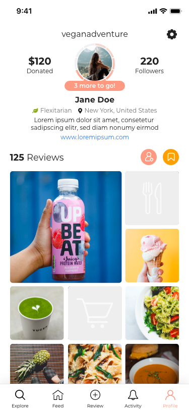
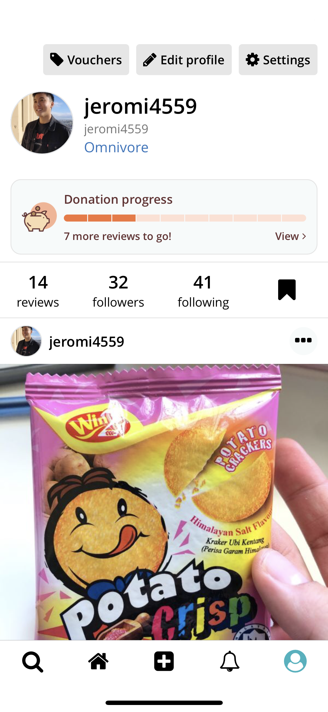

Build a reusable system
Created design-system patterns and components that carried the new brand through the profile feature.
Translating a new brand system into a clearer profile experience.

I led the UX design for abillion’s profile revamp, applying a new visual brand system across the profile experience for people creating and exploring vegan reviews.
I designed the end-to-end feature: personal profiles, personal empty states, other-user profiles, empty other-user profiles, creation, error, and offline states, plus settings and collections. I worked directly with stakeholders to align on concepts and deliver a build-ready direction.
Created design-system patterns and components that carried the new brand through the profile feature.
Used flows, wireframes, and prototypes to clarify content hierarchy, completion cues, and next actions.
Delivered production-ready specifications so the feature could move from stakeholder approval to implementation.
Before launch, I ran moderated remote testing in UXArmy with four participants across eight tasks. Participants could find collections and settings, while the sessions revealed ambiguity around donation progress, following versus followers, and some icon meanings to address before release.

I ran moderated remote usability testing in UXArmy with four participants. Across eight tasks, participants explored the profile, collections, settings, donation progress, and social information. The goal was to check whether they could orient themselves quickly and understand what each element enabled them to do.
Participants could locate collections and settings, supporting the information hierarchy and navigation direction.
The donation-progress module created questions about what the visual status meant and what action, if any, was expected next.
Following versus followers and several icon meanings were not immediately clear, highlighting places where labels and supporting cues could do more work.
The profile revamp launched in the app, giving users a clearer way to understand profile content, collections, settings, and the actions available to them.